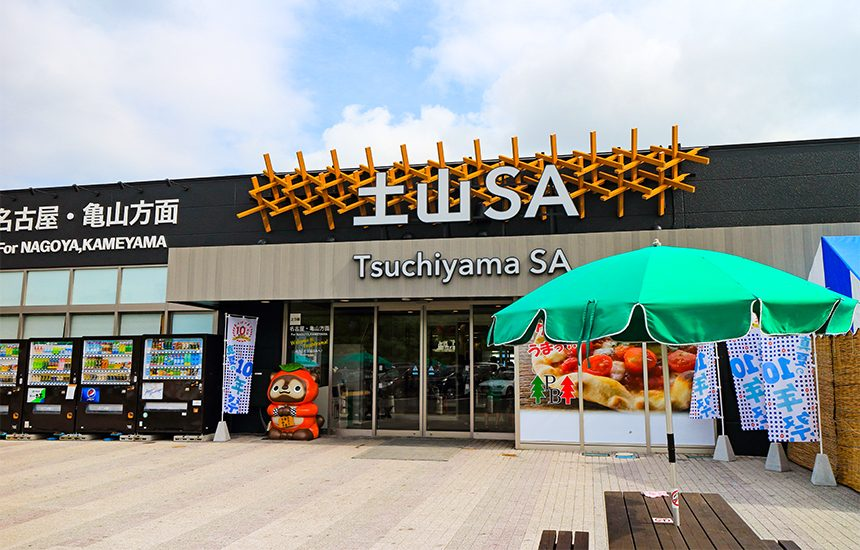
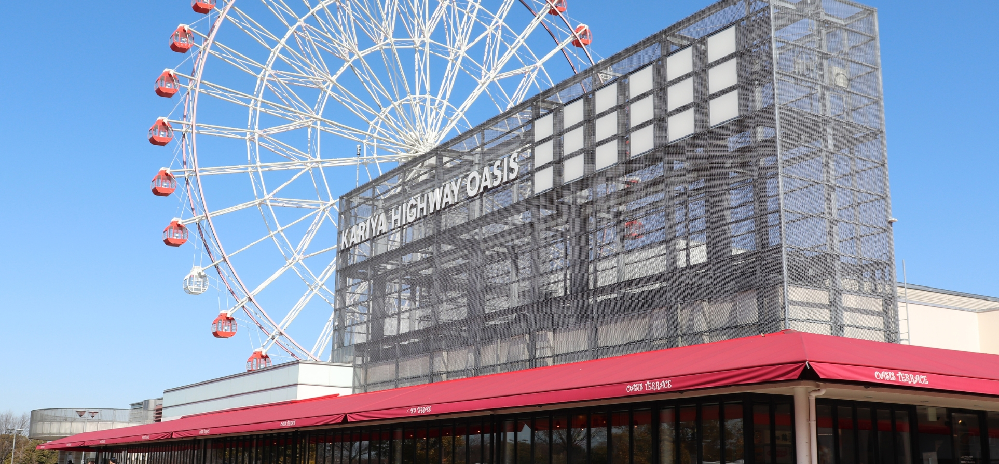

出発の日 ＆ 富士吉田へ
夜明け前に堺を出発。高速を駆け抜け、
朝霧高原・青木ヶ原樹海ルートで富士の麓へ
堺 → 新名神 → 伊勢湾岸道 → 新東名 → 富士IC → 国道139号（樹海ルート）→ 富士吉田 → 石和温泉
総走行距離 約430km ／ 所要約9〜10時間（SA休憩含む）
サービスエリア 休憩プラン1時間ごとに休憩 ／ ランクル250なら快適ロングドライブ

新名神最初の大型SA。上り線側に展望デッキあり。早朝でもコンビニ開店。鈴鹿山脈を眺めながら休憩。

ハイウェイオアシス直結。観覧車・温浴施設もある異色PA。朝ならすいすい。名古屋名物きしめんも◎

駿河湾を一望できる絶景SA！新東名最大級。桜エビかき揚げ丼や地元グルメが充実。日の出後は富士山も！

✨ここが最大の見どころ！富士山と富士川が同時に見える絶景展望台。記念写真は必須。ここから富士ICへ向かう。
富士吉田のみどころ11:00 頃到着後に散策

金鳥居（富士みち）
国道139号沿いの大鳥居。正面に富士山がドーンと現れる最強フォトスポット。ドラマ「ホットスポット」キービジュアルの撮影地。外国人観光客も多数。
🔗 富士吉田観光ガイド

☕ 喫茶もんぶらん【昼食候補】
1980年創業のレトロ喫茶。ドラマで主人公たちの溜まり場として毎回登場。名物「かくれんぼパフェ」はドラマ放映後に大行列！パスタ・ドリアも絶品。
🍽 食べログでチェック

🍜 吉田うどん【昼食候補】
富士吉田名物の太麺うどん。馬肉やキャベツをトッピングするのが地元流。もちもちで歯ごたえ抜群。市内に20店以上あり1杯400〜600円とリーズナブル。
🍽 みうらうどん（食べログ）
タイムスケジュールDay 1（5月2日）
- 04:00
🚙 堺 出発
早朝出発でGW渋滞を回避。阪神高速→近畿道→新名神へ。ランクル250のシートでゆったり。
- 05:00
土山SA（新名神）休憩
約100km。コンビニで朝食&珈琲調達。鈴鹿山脈の空気でリフレッシュ。
- 06:00
刈谷PA（伊勢湾岸道）休憩
ハイウェイオアシス内のフードコートで朝食。名古屋名物も揃う。トイレ・給油も忘れずに。
- 07:00
駿河湾沼津SA（新東名）休憩
駿河湾を一望。桜エビ推しのメニューが並ぶ。富士山も望めるビューポイント。
- 08:00
🗻 富士川SA（新東名）休憩【撮影スポット】
富士山＋富士川の絶景展望台。ここで初の本格的な富士山撮影タイム！ランクルと富士山のツーショットもぜひ。約20分休憩後、富士ICへ。
- 09:00
富士IC 下車 → 国道139号へ
高速を降り一般道へ。富士山を正面に見ながら国道139（富士宮街道）を北上スタート。
- 09:30
🌲 朝霧高原 ／ 青木ヶ原樹海 チラ見
広大な牧草地と正面の富士山が絶景の朝霧高原。さらに北上すると精進湖、そして国道沿いに広がる青木ヶ原樹海へ。木漏れ日の中を走る幻想的なドライブ。ランクルが映えます！
- 11:00
🗻 富士吉田 到着！
金鳥居で富士山バックに記念撮影。まずはドラマの舞台を感じながら街を散策。
- 11:30
🍜 昼食 ─ 吉田うどん or 喫茶もんぶらん
【A案】吉田うどん（馬肉・キャベツトッピング）でローカルグルメ体験 ／ 【B案】ドラマロケ地「もんぶらん」でかくれんぼパフェ＋ランチ（混雑に注意）
- 13:00
🛸 ホットスポット聖地巡礼
月江寺通り→西裏地区レトロ横丁→北口本宮冨士浅間神社を散策。ドラマに登場した「いちやまマート城山店」も立ち寄れば駐車場から富士山が見える！
- 15:30
🍷 石和温泉へ出発
中央道一宮御坂ICへ向かいながら、翌日の信玄餅テーマパーク周辺を下見もOK。国道137号経由で約1時間。
- 17:00
♨️ 石和びゅーホテル チェックイン
笛吹川沿いのリゾートホテル。アルカリ性の名湯で今日のドライブ疲れを存分に癒して。夕食は甲州ワイン＆ほうとう鍋を満喫。
信玄餅 ＆ 諏訪湖 ＆ 中津川へ
山梨の銘菓テーマパークから信州諏訪湖へ。
そして中山道の宿場町・中津川へ南下。
石和温泉 → 信玄餅テーマパーク → 中央道 → 諏訪湖SA →（諏訪市内観光）→ 中央道 → 恵那峡SA → 中津川
総走行距離 約180km

桔梗信玄餅工場テーマパーク【午前】
山梨の銘菓「桔梗信玄餅」の製造工場を無料見学。1日12万個をスタッフが6秒で手包みする職人技は必見！
⚠️ 詰め放題の整理券は早朝6〜8時に配布終了します。ホテルを早めに出発して！
詰め放題220円でお菓子を袋に詰め放題。信玄ソフト（きな粉＋黒蜜）も絶品。

諏訪湖 ＆ 諏訪大社（上社・下社）
日本最古の神社のひとつ・諏訪大社と、信州随一の景勝地・諏訪湖を観光。諏訪湖SAからは湖と山並みの絶景パノラマが楽しめる。片倉館の千人風呂（日帰り温泉）も人気。
🔗 諏訪大社公式
🍜 諏訪湖ランチ（信州そば or 鯉料理）
諏訪湖周辺は信州そばの名店が多数。内陸の長野ならでは「鯉のあらい」「馬刺し」も試してみて。諏訪湖SAのフードコートでも信州そばが食べられる。

恵那峡SA（中央道）
大井ダムと恵那山が見える絶景SA。展望台あり。岐阜名物「飛騨牛コロッケ」「栗あわせ」が名物。恵那山トンネル（8.5km・全国6位の長さ）通過前の休憩にも最適。

中津川 ─ 馬籠宿（中山道）
中山道の宿場町として石畳の坂道が続く馬籠宿。島崎藤村の出身地でもあり文学の里。五平餅・栗きんとんの老舗が軒を連ねる。ランクルで宿場町の雰囲気を楽しんで。
🔗 馬籠宿公式
タイムスケジュールDay 2（5月3日）
- 07:00
🏨 石和びゅーホテル 朝食 ＆ チェックアウト
旅館の朝食で英気を養う。詰め放題整理券を狙うなら早めに出発！
- 08:00
🏃 桔梗信玄餅テーマパーク 到着・整理券GET！
詰め放題の整理券配布状況を確認。整理券が残っていればラッキー！工場見学は予約不要・無料。
- 09:00
🍡 信玄餅テーマパーク 満喫タイム
工場見学→信玄ソフト→詰め放題（整理券あれば）→お土産購入。お土産に信玄生プリン（2015年グランプリ）を忘れずに。約2時間。
- 11:00
🚙 中央道で諏訪湖方面へ
一宮御坂IC → 中央道 → 諏訪IC。約1時間のドライブ。
- 12:00
🍜 諏訪 昼食（信州そば）
諏訪IC周辺の信州そば名店へ。または諏訪湖SAのフードコートで手軽に信州そばを。
- 13:30
⛩ 諏訪大社 参拝 ＆ 諏訪湖散策
全国に約25,000社ある諏訪神社の総本社。神楽殿の大しめ縄が圧巻。諏訪湖畔を散歩してリフレッシュ。
- 15:30
🚙 中央道で中津川へ（恵那峡SAに立ち寄り）
諏訪IC → 恵那峡SA（絶景展望台）→ 中津川IC。約1.5時間。
- 17:00
🏯 中津川 馬籠宿 散策（夕暮れ前）
石畳の坂道をランクルで近くまで行き、夕暮れの馬籠宿を散策。栗きんとんの老舗でお土産購入。
- 18:30
🏨 ルートイン中津川インター チェックイン
中津川IC近くのビジネスホテル。無料駐車場完備（ランクル250も余裕）。翌朝の関市ウナギに備えて早めに就寝。
関ウナギ ＆ 帰路へ
刃物の街・岐阜県関市で名物うなぎランチ。
腹いっぱいになったら一路、堺へ帰還！
中津川 → 東海環状道 → 関市（うなぎ昼食）→ 東海北陸道 or 名神/新名神 → 堺
総走行距離 約230km

🍥 関ウナギ【メインイベント】
鎌倉時代の刀鍛冶がスタミナ源として愛食したのが「関のうなぎ」の起源。長良川の清流に育まれたウナギは身がふっくら。現在も市内に10数店が名店を構える。
⚠️ 人気店は売り切れ閉店もあり。11時の開店に合わせて到着を！
🍥 名代 辻屋（ミシュラン掲載）
慶応年間（1860年頃）創業。2019年ミシュランガイド岐阜 ビブグルマン獲得。炭火で香ばしく焼いた極上うなぎを秘伝タレで。うな丼・うな重が名物。
📍 関市山王通1-3付近（食べログ評価3.79）

🍥 孫六（80年以上の老舗）
創業80年超、せきてらす（岐阜関刃物会館）前に暖簾を掲げる名店。ランチのみ営業。生のうなぎを炭火で一気に焼き上げ秘伝タレを二度漬け。こってり系。
📍 関市（長良川鉄道「せきてらす前駅」徒歩1分）

🍥 しげ吉（食べログ百名店）
食べログうなぎ百名店2024選出。関市山王通の一角にある人気店。ふわっとした柔らかい身と香ばしいタレが特徴。ふるさと納税返礼品にもなっている超名店。
📍 岐阜県関市山王通1-3-29

🔪 せきてらす（刃物会館）
刃物の街・関市のシンボル施設。包丁・ナイフ・ハサミなど高品質な関刃物をお土産に。刃物工房では鋼切り体験も。古式日本刀鍛錬の一般公開（期間限定）も見応えあり。

帰路 おすすめSA
土山SA（新名神）：伊勢湾岸道→新名神ルートで立ち寄り。最後のお土産・給油に。多賀SA（名神）：滋賀県・近江牛コロッケが名物。関西圏最後の大型SA。GW帰りの渋滞に注意！
タイムスケジュールDay 3（5月4日）
- 07:30
🏨 ルートイン中津川インター チェックアウト
朝食を済ませてすっきりスタート。関市まで東海環状道経由で約1時間。
- 08:30
🚙 東海環状道 → 関市へ
中津川IC → 東海環状道 → 関ICで下車。または中央道 → 土岐JCT → 関ICでも。所要約1時間。
- 10:30
🔪 せきてらす（関刃物会館）散策 ＆ お土産
開店時間に合わせて立ち寄り。関の高品質包丁・ハサミをお土産に。刃物工房も見学。
- 11:00
🍥 関ウナギ ランチ【旅のクライマックス！】
辻屋・孫六・しげ吉などから選んでドーン！。うな丼でもうな重でも。長良川の恵みを全身で感じて。売り切れが多いので開店時間に到着するのがベスト。
- 13:00
🚙 帰路へ！関IC → 東海環状 or 東海北陸道 → 名神/新名神 → 堺
GW最終日の渋滞を避けるため早めに出発。渋滞予測を見ながらルートを選択。
- 15:00
土山SA or 多賀SA 休憩
新名神・名神の大型SAで最後の休憩。渋滞状況によってはここで時間調整を。
- 17:00〜
🏠 堺 到着！お疲れさまでした
富士山・樹海・信玄餅・諏訪湖・栗きんとん・関ウナギ…ランクル250で駆け抜けた最高の3日間！
旅の準備メモ持ち物 ・ 注意事項 ・ 予約リスト
- ETCカード（必須！GW割引なし注意）
- スマホ充電器・モバイルバッテリー
- クーラーボックス（栗きんとん保冷）
- カメラ・三脚（富士山撮影用）
- 薄手のアウター（諏訪湖は肌寒い）
- 歩きやすいスニーカー（馬籠宿石畳）
- GW渋滞：5/3〜4は帰り渋滞に注意
- 信玄餅詰め放題は早朝6時台で終了も
- ウナギ名店は売り切れ閉店あり・早め到着
- 5/2〜6は休日割引なし（NEXCO確認済）
- ランクル250は大型駐車場で問題なし
- 樹海は国道139沿いを走るだけ、安全
- 石和びゅーホテル（5/2泊）要確認
- ルートイン中津川インター（5/3泊）要確認
- ウナギ店：混雑時は予約困難。早着が吉
- 信玄餅テーマパーク：予約不要・無料
- 北口本宮冨士浅間神社：予約不要
- 桔梗信玄餅 ／ 信玄生プリン（山梨）
- 栗きんとん：川上屋・すや（中津川）
- 関の刃物：包丁・ハサミ（岐阜）
- 吉田うどん乾麺（富士吉田）
- 甲州ワイン・ほうとうセット（石和）
- 桜エビ・干物（新東名SA）